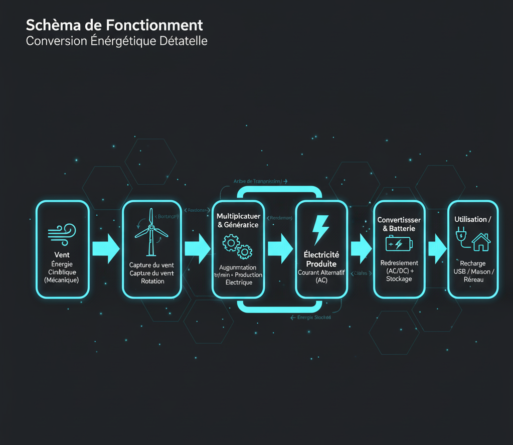

Projet d'Ingénierie: Éolienne Miniature
Conception & Modélisation d'un Système Énergétique Autonome
Le Défi: Le Cahier des Charges
L'objectif de ce projet d'ingénierie était de concevoir et modéliser une éolienne miniature fonctionnelle. En équipe (Aristide, Nino, Saif), nous avons défini et respecté un cahier des charges précis pour guider notre conception.
Objectifs Clés
-
Conversion ÉnergétiqueTransformer l'énergie mécanique du vent en électricité.
-
StockageIntégrer une solution de stockage d'énergie (batterie).
-
ProtectionAssurer la protection des composants électriques contre l'humidité.
-
Résistance au VentCapacité à opérer sous des vents modérés (jusqu'à 40 Km/h).
-
FacilitéConception axée sur la simplicité d'assemblage et d'entretien.
-
UtilitéPossibilité de recharger de petits appareils électroniques.
Nos Choix de Conception
1. Dimensions et Matériaux
Nous avons opté pour une structure compacte et robuste, adaptée à une éolienne miniature :
-
Hauteur TotaleEnviron 30 cm pour l'ensemble du mât et des pales.
-
Longueur des Pales10 à 15 cm pour optimiser la capture du vent.
-
Matériau (Pales)ABS ou PP (Polypropylène) pour leur légèreté et résistance.
-
Matériau (Support)Métal, assurant une stabilité et une durabilité accrues.
2. Optimisation des Pales
Un choix crucial était le nombre de pales. Nous avons analysé les avantages et inconvénients de chaque configuration :
| Comparaison | Deux Pales | Trois Pales |
|---|---|---|
| Avantages | - Moins cher à fabriquer - Moins de frottement (tourne plus vite) |
- Meilleure efficacité énergétique - Fonctionne sur large plage de vent |
| Inconvénients | - Moins stable, plus de vibrations - Problématique pour grandes structures |
- Légèrement plus cher à construire |
Principe de Fonctionnement
L'éolienne capture l'énergie cinétique du vent (énergie mécanique) et la convertit en énergie électrique grâce à un alternateur.
La rotation des pales, générée par la portance du vent (principe de Bernoulli), entraîne l'arbre principal. Celui-ci est connecté à un alternateur (via un multiplicateur si nécessaire) qui convertit l'énergie mécanique en électricité. Cette électricité est ensuite acheminée vers un convertisseur et/un système de stockage (batterie) avant d'être distribuée au réseau ou utilisée.